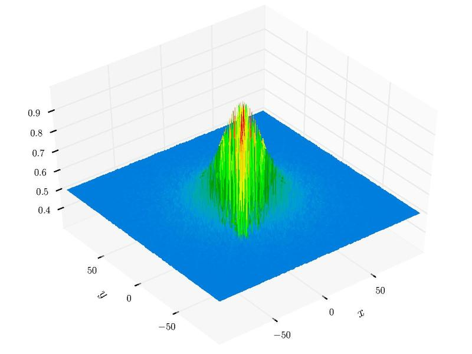

遗传算法：改进方向之精英策略¶
2018-10-27 | numeric calculation
之前根据自适应策略改进基本遗传算法的原理进行了Python实现，本篇将采用另一常见的思路——精英保留策略继续改进基本遗传算法程序，以进一步提升计算精度。
精英保留策略¶
为了防止当前群体的最优个体在下一代发生丢失，导致遗传算法不能收敛到全局最优解，De Jong在其博士论文中提出了精英选择(Elitism)策略，也称为精英保留(Elitist Preservation)策略。把群体在进化过程中迄今出现的最好个体不进行遗传操作而直接复制到下一代中，一般会将其替换下一代中的最劣个体。精英保留策略改进了标准遗传算法的全局收敛能力，并且从理论上被证明了 具有精英保留的标准遗传算法是全局收敛的。
以下即在前文标准遗传算法的基础上，采用上一代最优个体替换遗传操作后产生的子代中的随机个体，即将该精英个体无条件复制到子代。
#----------------------------------------------------------
# GA.py: Simple Genetic Algorithm
#----------------------------------------------------------
import numpy as np
class GA():
'''Simple Genetic Algorithm'''
def __init__(self, population, selection, crossover, mutation, fun_fitness=lambda x:np.arctan(-x)+np.pi):
'''
fun_fitness: fitness based on objective values. minimize the objective by default
'''
self.population = population
self.selection = selection
self.crossover = crossover
self.mutation = mutation
self.fun_fitness = fun_fitness
def run(self, fun_evaluation, gen=50, elitism=True):
'''
solve the problem based on Simple GA process
elitism mechanism: keep the best individual to new generation
'''
# initialize population
self.population.initialize()
# solving process
for n in range(1, gen+1):
# <<<<<<<<<<<<<<<<<<<<<<<<<<<<<<<<<<<<<<<<<<<<<<<<<<<<<<<
# the best in previous generation
if elitism:
the_best = copy.deepcopy(self.population.best(fun_evaluation, self.fun_fitness))
# >>>>>>>>>>>>>>>>>>>>>>>>>>>>>>>>>>>>>>>>>>>>>>>>>>>>>>>
# new generation by GA operations:
# select
fitness, _ = self.population.fitness(fun_evaluation, self.fun_fitness)
self.selection.select(self.population, fitness)
# crossover
self.crossover.cross(self.population)
# mutation
self.mutation.mutate(self.population, np.random.rand())
# <<<<<<<<<<<<<<<<<<<<<<<<<<<<<<<<<<<<<<<<<<<<<<<<<<<<<<<
# elitism mechanism:
# set a random individual as the best in previous generation
if elitism:
pos = np.random.randint(self.population.size)
self.population.individuals[pos] = the_best)
# >>>>>>>>>>>>>>>>>>>>>>>>>>>>>>>>>>>>>>>>>>>>>>>>>>>>>>>
# return the best individual
return self.population.best(fun_evaluation, self.fun_fitness)测试¶
依然采用二元函数Schaffer_N4进行测试，最小值点f(0,1.25313)=0.292579。
f(x,y) = 0.5 + \frac{\cos^2 \left[\sin\left(|x^2-y^2| \right) \right] -0.5}{\left[1+0.001\left(x^2+y^2\right)\right]^2} \,\,\,\, \left(-10 \leq (x,y) \leq 10\right)

#----------------------------------------------------------
# test.py
#----------------------------------------------------------
from GAComponents import Individual, Population
from GAOperators import RouletteWheelSelection, Crossover, Mutation
# schaffer-N4
# sol: x=[0,1.25313], min=0.292579
schaffer_n4 = lambda x: 0.5 + (np.cos(np.sin(abs(x[0]**2-x[1]**2)))**2-0.5) / (1.0+0.001*(x[0]**2+x[1]**2))**2
I = Individual([(-10,10)]*2)
P = Population(I, 50)
S = RouletteWheelSelection()
C = Crossover(0.9, 0.75) # 设定自适应交叉概率区间
M = Mutation(0.2)
g = GA(P, S, C, M)
res = []
for i in range(10):
res.append(g.run(schaffer_n4, 500).evaluation)
val = schaffer_n4([0,1.25313])
val_ga = sum(res)/len(res)
print('the minimum: {0}'.format(val))
print('the GA minimum: {0}'.format(val_ga))
print('error: {:<3f} %'.format((val_ga/val-1.0)*100))
#----------------------------------------------------------
# output:
#----------------------------------------------------------
the minimum: 0.29257863204552975
the GA minimum: 0.29259259704630364
error: 0.004773076104780394 %经过精英保留策略的改进，该算法求解二元函数Schaffer_N4最小值的平均误差由3%下降至0.005%左右。最后，综合整理此前所有代码：